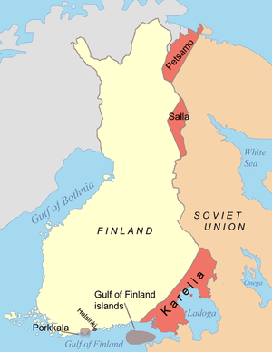
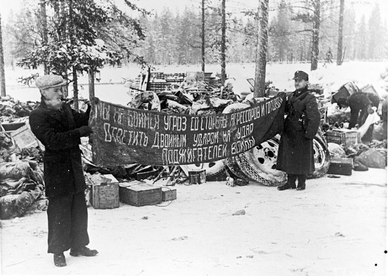

Cauze
URSS-ul a inițiat acest război pentru a-și proteja interesele de la granița cu Finlanda și pentru a avea o poziție defensivă mai bună a Leningradului. Acesta se afla la numai 32 de km distanță față de granița cu Finlanda. Când Finlanda a refuzat cererile sovieticilor de a ceda o parte din teritoriul său de graniță, URSS-ul a invadat-o.
În speranţa de a proteja Leningradul împotriva unui viitor atac german, Stalin a încercat să transforme Golful Finlandei într-o cale maritimă sovietică. Letonia, Lituania şi Estonia au fost intimidate şi obligate să încheie înţelegeri care au îngăduit staţionarea Armatei Roşii în puncte-cheie de pe teritoriul lor. Apoi, suveranitatea lor a fost cu totul încălcată printr-o anexare de facto. Înconjurate din trei părţi de puternica Rusie, aceste ţări nu au avut de ales decât să consimtă.

